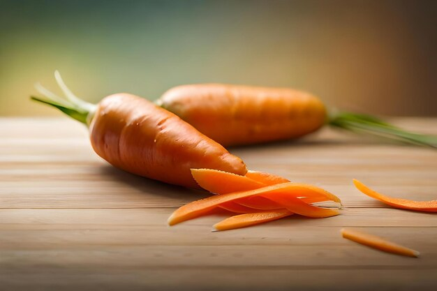

Ou dur amb verdures
Ingredients
- 2 ous

- 1 pastanaga petita

- 1 bròquil petit

- Sal i pebre

Pas a pas
- Primer de tot bullirem els ous 10 minuts.

- Courem les verdures i les bullirem al vapor entre 5-7 minuts.En el meu cas bròquil encara que es pot realitzar amb cualsevol tipus de verdura.

- Per acabar servim els ous amb les verdures i afegirem sal i pebre.

Resultat final

Volver a incio